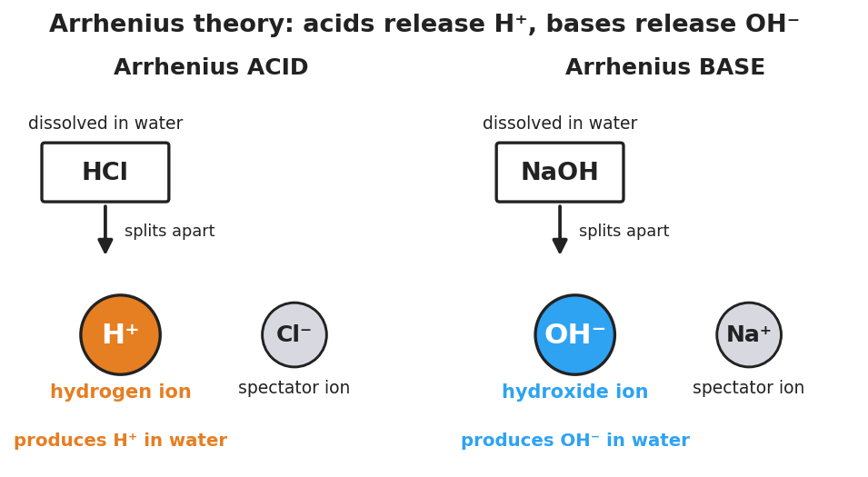

01 Phenomenon
Your teacher shows two families of liquids. Group A is lemon juice, vinegar, and dilute hydrochloric acid — a fruit, a salad dressing, and something from a car battery. They come from completely different places, but every one of them tastes sour, turns blue litmus paper red, and fizzes when it touches a metal strip. Group B is drain cleaner, soapy water, and milk of magnesia — also unrelated sources, but every one feels slippery and turns red litmus paper blue.
02 Driving question
Why do all acids share certain properties — sour taste, reacting with metals, turning litmus red — no matter what they are made of?
03 Notice & wonder
| I notice… | I wonder… |
|---|---|
Turn & Talk #1: Every acid in Group A behaves the same way even though they come from different places. When many different things share the same behavior, it usually points to a shared cause. In one sentence, what could the shared cause be? Try to name one thing that might be the same inside every acid.
04 Initial model
Before you test anything, write or draw your best guess. You do not need the right answer — make your best prediction.
- What do you think all acids have in common with each other?
- What do you think all bases have in common with each other?
05 Investigate
Part 1 — Properties of Acids and Bases Stations Lab
Safety: goggles and aprons on. Do NOT taste any substance. Sour and bitter are reported from your everyday experience, never tested in the lab. At each station, test the substance with red and blue litmus paper and record the color result. At the metal station, watch for fizzing (bubbles). Do not write “acid” or “base” yet — just record what you observe.
| Station / substance | Red litmus (color result) | Blue litmus (color result) | Metal: does it fizz? |
|---|---|---|---|
| Lemon juice | |||
| Vinegar (CH₃COOH) | |||
| Dilute HCl | |||
| Distilled water (control) | |||
| Baking-soda solution | |||
| Soapy water | |||
| Dilute NaOH | |||
| Milk of magnesia |
Why a control? Distilled water is the control. In one sentence, why is it useful to test a substance that does nothing?
Part 2 — Sort into two families
Using your data, sort the substances (leave out the distilled-water control) into two columns by their behavior alone.
| Family 1 — sour-type behavior (fizzes metal, turns blue litmus red) | Family 2 — slippery-type behavior (turns red litmus blue) |
|---|---|
Part 3 — Look at the formulas
Your teacher will project the formulas. Circle anything the Family 1 formulas share, and anything the Family 2 formulas share.
Family 1 (sour-type): HCl, CH₃COOH, citric acid (contains –COOH)
Family 2 (slippery-type): NaOH, KOH, Ca(OH)₂
What do all the Family 1 formulas have in common? _______________________________________________
What do all the Family 2 formulas have in common? _______________________________________________
Look at the particle diagram below. It shows what happens to one acid and one base when they dissolve in water.

06 Make it make sense
For each item, use the formula and the diagram above to reason it out.
A bottle is labeled HNO₃. You have never tested it.
- Acid or base? _______________
- How do you know from the formula alone? _______________________________________________
- What ion does it produce in water? _______________
A bottle is labeled KOH. You have never tested it.
- Acid or base? _______________
- How do you know from the formula alone? _______________________________________________
- What ion does it produce in water? _______________
Lemon juice and dilute HCl come from completely different sources, yet they gave the same litmus and metal results.
- What single ion do both of them produce in water? _______________
- Why does this explain why they share the same properties? _______________________________________________
A bottle is labeled NaCl (table salt). It has no leading H and no OH group.
- Acid, base, or neither? _______________
- What would you predict it does to litmus? _______________________________________________
07 Key vocabulary
- Arrhenius acid
- a substance that produces hydrogen ions (H⁺) when dissolved in water; identifiable from a formula with a leading H (HCl, HNO₃, H₂SO₄) or a –COOH group; the H⁺ is the common ion responsible for all acid properties (sour, reacts with active metals, turns blue litmus red)
- Arrhenius base
- a substance that produces hydroxide ions (OH⁻) when dissolved in water; identifiable from a formula containing a hydroxide group bonded to a metal (NaOH, KOH, Ca(OH)₂); the OH⁻ is the common ion responsible for all base properties (bitter, slippery, turns red litmus blue)
- hydrogen ion (H⁺)
- a hydrogen atom that has lost its single electron, leaving a bare proton; the ion every Arrhenius acid releases into water; its shared presence is why all acids share the same properties regardless of what else they are made of
Use each term in a sentence about today’s investigation. Do not copy the definition — describe something you actually observed or reasoned out.
Arrhenius acid: _______________________________________________ _______________________________________________
Arrhenius base: _______________________________________________ _______________________________________________
hydrogen ion (H⁺): _______________________________________________ _______________________________________________
08 Revise your model
Return to your Initial Model.
What do all acids actually have in common? _______________________________________________
What do all bases actually have in common? _______________________________________________
Classify each from the formula alone — acid, base, or neither — and name the ion it produces:
| Formula | Acid / base / neither | Ion produced in water |
|---|---|---|
| HBr | ||
| KOH | ||
| H₂SO₄ | ||
| CH₃COOH | ||
| CaCl₂ |
Then finish this Because / But / So sentence:
Lemon juice and hydrochloric acid come from completely different sources but share every acid property because __________________________________________, but __________________________________________, so __________________________________________.
09 Exit ticket
- Classify each substance as an Arrhenius acid, an Arrhenius base, or neither, using only the formula. (You did not test these in the lab — use the formula rule.)
HI: _______________ LiOH: _______________ HClO₃: _______________
- For each acid or base you identified above, name the ion it produces in water (H⁺ or OH⁻).
- In one sentence, explain why all acids share the same properties even though they are made of different elements. Try to use the words pattern and ion, or the words common and H⁺.
10 Explore further
- Properties of Acids and Bases — Stations Lab (ACTIVE LEARNING anchor): Set up 4–6 stations with safe household and lab substances (lemon juice, vinegar, dilute HCl, distilled water as a control, baking-soda solution, soapy water, dilute NaOH, milk of magnesia). At each station students test the substance with red and blue litmus paper, observe (do not taste — sour/bitter is reported from prior experience, not tasted in lab), and at the metal-reaction station observe whether a strip of Mg or Zn fizzes. Students record results in a class data table and sort substances into two columns *before any vocabulary is given*. This is the Explore-before-Explain activity.
- Acid/base identification practice from formulas: Using the formulas of the station substances and a short additional list (HCl, HNO₃, H₂SO₄, NaOH, KOH, Ca(OH)₂, CH₃COOH, NaCl), students learn to read a formula and predict acid vs. base by looking for the leading H (acid) or the OH group (base). Connect each prediction back to the `figures/arrhenius_dissociation.png` particle diagram.
- For a digital option, a Javalab "acid–base indicator" or PhET solutions module can preview the litmus color changes before the hands-on stations; no external URL is required for the core lesson.